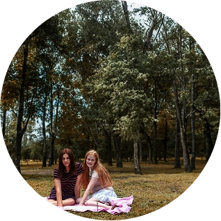
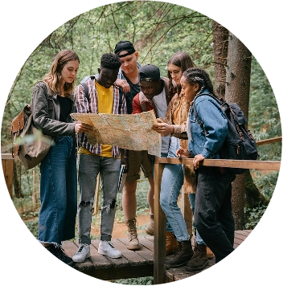
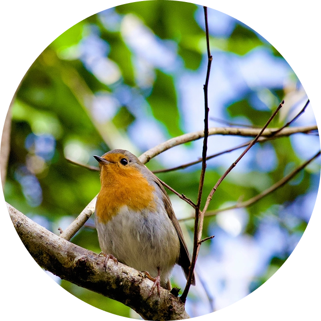
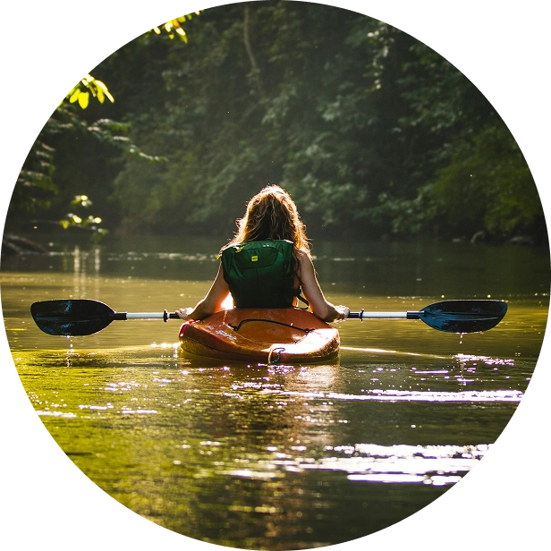
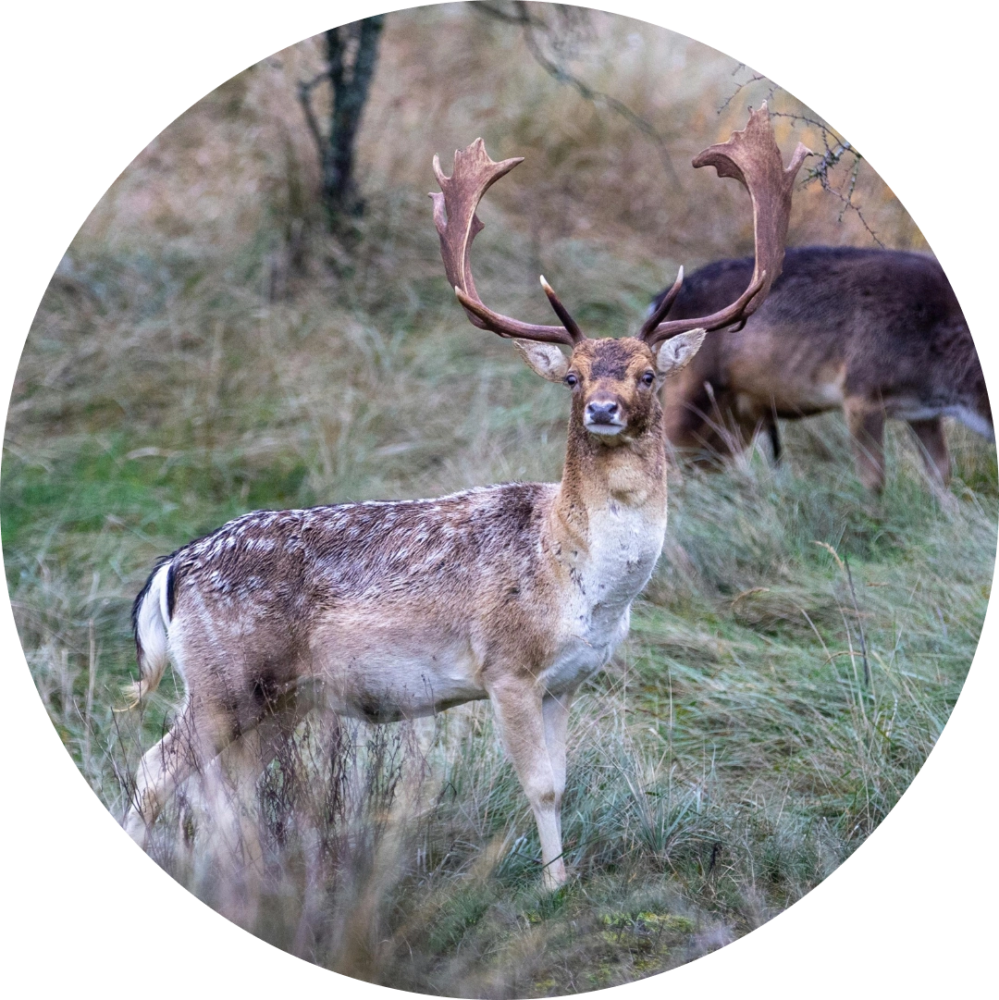
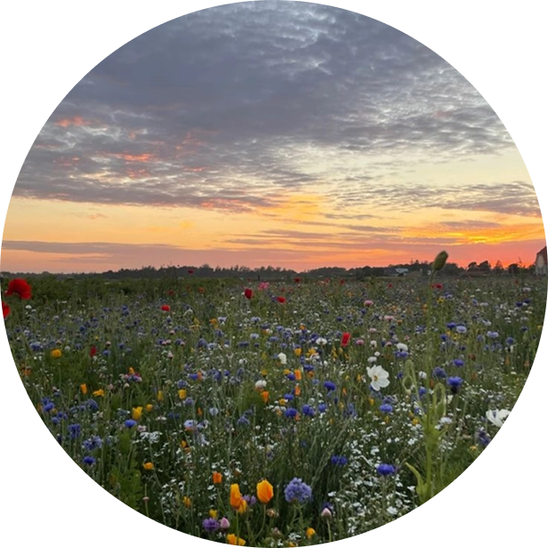

Samt hvor i landet de smukke steder befinder sig!


Til den danske natur
Med Dankort Ønskebrønd, støtter du ikke bare bevarelse af den danske natur, men sørger også for en bedre og grønnere fremtid sammen med hinanden. Den danske natur har det svært. 2.570 slags dyr, planter og svampe er i fare for at forsvinde. Der er for få gode levesteder tilbage.
Vil du vide mere om de områder der bliver doneret til?
Donationstæller
Formålet med donationstælleren er at give et løbende indblik i den samlede donationspulje, der er så retvisende som muligt. Donationstælleren er en simulator, der løbende viser den forventede totale donation på et givent tidspunkt – både fra Dankort og partnere. Simulationen er baseret på Nets’ historiske transaktionsdata og prognoser for Dankort, herunder partnerbanker og -butikkers antal af transaktioner med Dankort. Simulatoren korrigeres løbende ud fra de faktiske transaktionstal. Omregning til ’m2 naturområde’ er baseret på den m2-pris, som donationerne omsættes til af Naturfonden. Opkøb af 1 m2 naturområde sker til en pris på 12 kr. Omregning til ’fodboldbaner og 4-personers telte’ er lavet for at gøre størrelsen af det optjente naturområde lettere forståeligt, og er baseret på en beregning, hvor 1 fodboldbane er opgjort til 7.140 m2 og et 4-personers telt er opgjort til 5 m2. Donationstælleren viser den samlede estimerede donation for både Dankort og samarbejdspartnere fra 1. januar i indeværende år.

Aktiviteter vi anbefaler at lave i de smukke naturområder

Vandreture
Der er allerede nu stier i området, hvor du kan opleve naturen. Se kortet nedenfor på siden. Naturområdet har fri offentlig adgang og får direkte stiforbindelser fra Korsør, Korsør Station og motorvejsparkeringen..
Hammer Bakker

Fuglereservater
Den bedste natur er i fuglereservatet ved Lejodde og Lejsø. Her yngler fugle som den sjældne stor kobbersneppe, dværgterne, havterne, fjordterne, splitterne, vibe, stor præstekrave, rødben og strandskade forår og sommer.
Lejodde

Picnic i blomstrene enge
Når områdets marker er genoprettet til vildere natur kan du opleve et farverigt flor af vilde planter, hvor sommerfugle og andre insekter suger nektar.
Gjellerup Enge

Kajak ved fjorden
Oplev den rolige natur fra vandet og kom tæt på fuglelivet langs kysten. Fjorden byder på smukke udsigter, stille vand og gode muligheder for både begyndere og erfarne kajakroere.
Vejle Fjord

Skovtur og dyreliv
Tag på opdagelse mellem træerne og oplev det rige dyreliv i skoven. Her kan du finde rolige stier, høre fuglesang og nyde naturen året rundt.
Hesbjerg Skov

Udsigt og naturfoto
Det dramatiske landskab og de stejle klippeformationer gør området perfekt til vandreture og naturfotografi. Nyd udsigten over havet og oplev den særlige bornholmske natur.